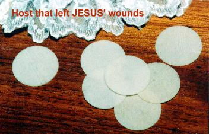
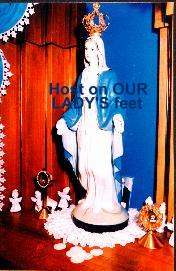
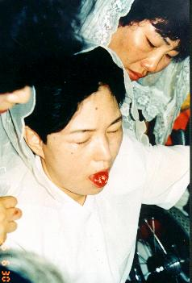
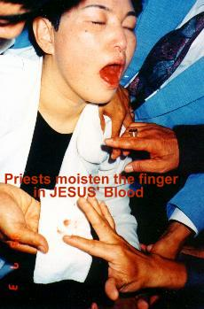
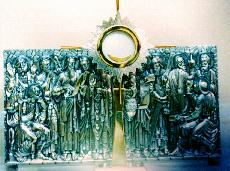
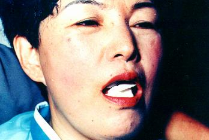
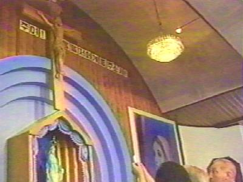
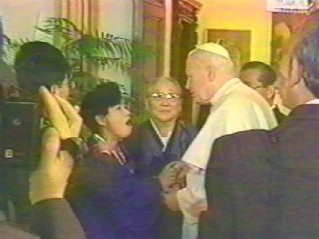

8th, 9th
and 10th EUCHARISTIC MIRACLES
� They happened in
8th, 9th
and 10th EUCHARISTIC MIRACLES
� They happened in
Naju, June 30, July 1st and 2nd, 1995. Thousands of
pilgrims they fill the Parochial Church, to commemorate the 10th
Birthday of the spill of tears of OUR LADY'S image. The Holy Mass was celebrated
on the night of June 30th and concelebrated by eight priests. The
seer has seated in the back of the Church and by last she has taken communion.
In the instant of the communion, suddenly, the persons that were near Julia saw
sharply that the Sacred Host in her tongue became a piece of flesh covered with
the Blood of the LORD JESUS. Shocked and full of emotion, many people cried
before the reality of seeing in front of them, the live Body of GOD. The priests
and people that were in the proximity testified the notable phenomenon.
After the Mass
finished, the pilgrims accompanied the seer to Chapel, where was OUR LADY'S
image, for the night service of prayer in continuing the commemorations. With
the place completely occupied by the animated faithful that they prayed and sang
hymns in to praise the VIRGIN MARY, the ceremony began. In the middle of the
prayer Julia began to feel terrible pains in the area of the abdomen, in
reparation by the abortions that murder so many innocents. Then an impressive
scene happened which it portray the desperate resistance of the fetus that it
doesn't want to leave its mother's uterus that wants to abort him, and by the
seer's mouth it manifest all fear its by the death that approaches and screams:
�No mom, no mother, don't kill me"
. In the silence of the Chapel, where was only heard the
Seer's painful screams, Fr. Francis Su, of Malaysia, invited everybody to kneel
and pray for the people's conversion that they are responsible by killing of
unborn babies. With emotion the people crying prayed with a great faith,
thanking GOD for that wonderful mystic experience.
It was 3:45 A.M. of the morning of July 1st
and all the assembly was in silence
listening at
the report translated into English, of our BLESSED MOTHER'S last messages. All
of a sudden, Julia that was in the front row beside Fr. Su, Fr. Pete Marcial and
others, has stood up and was projected for front in the direction of the image,
extending her hands vigorously, as if trying to grab something that nobody saw.
It happened that while she heard the reading of the messages that she herself had received,
has seen Crucified JESUS' image on the wall, above where was the VIRGIN MARY'S
image, to win life and the LORD with a face in complete suffering, HE let the
blood to flow in quantity from seven large wounds it made by the nails of iron
in the feet and hands, from the lance of the roman soldier in the right flank,
from the sore opening of the Heart and from the wound in the head caused by the
Crown of Thorns. Soon, from the seven wounds, the precious blood became white
circles, and following into pure Sacred Host. Some people in the Chapel have
said that they saw a brilliant light, as if it went a fast flash coming out of
the crucifix. Others people heard a similar the hailstorm. The Sacred Hosts came
down out of the JESUS' wounds and they have begun to fall. Julia moved forward
and stretched her hands with determination in that moment, for to catch them, in
order of not to let them falling in the ground. But the Host they avoided the
seer's hands and lodged itself of manner comfortable in the altar, at the feet
of the VIRGIN MARY'S image, in the presence of the entire assembly that was
astonished when it saw the Host appear of sudden in the Altar. (The pictures that we presented to the right and
above were captured in that moment)
In the instant that the seven particles have fallen on the altar, was that some people
heard the noise as if it were of a hailstorm.
They also remembered the BLESSED
MOTHER'S request on November 24, 1994 to prepare a tabernacle in the
Chapel, beside HER image. Of course those seven Sacred Hosts that had just
arrived would be installed there inside a Ciborium.
This miracle
was carried to the knowledge of the local Archbishop in the same day. He
instructed Julia and the others to consume the Sacred Hosts soon and not to
leave them kept in the Tabernacle. In obedience they selected seven people to
receive them: two priests and five laymen, among them was the seer.
On the following day,
July 2nd, the chosen ones have received the Communion. As soon as
she received the Sacred Sacrament the miracle repeated, the Host became flesh
covered with Blood on her tongue. In fact nobody expected other miracle,
remembering that in less than 48 last hours had happened in the Parochial
Church. But in that way it stayed understood that our SACRED MOTHER was so
anxious in to restore a fervent devotion Eucharistic, that she sent other
surprising sign. The phenomenon happened like this:
The Chapel was
full of people with much faith that prayed and remained in anxious expectation
that some new fact could happen, at the same time that they were sensitive at
the facts and expressed gratitude to the LORD GOD for all the teachings and
demonstrations of love. Julia was instructed by the priest that celebrated the
Mass, by order of the Archbishop of the Archdiocese if the Miracle happened
again, she should immediately ingest the Host transformed into Body and Blood of
the LORD living. However, not intending to disobey the superior decision, but in
face of the impressive miracle that was repeated soon after, to the joy and
commotion of everybody, Fr. Su and Fr. Marcial who were attentive to the events,
encouraged the people to pray before GOD and fervently to supplicate the Divine
mercy because of the many sins of the world. And everybody in respectful
postures of adoration prayed and glorified the ETERNAL FATHER for that
magnificent and unequaled sign, while Julia stayed with open mouth showing the
LORD, who was filmed and photographed by the people. And for there to be not
doubt, the two priests immersed their fingers in the Precious Blood under the
seer's tongue and showed to everyone in the Chapel. It was one more
unquestionable and definitive test of the phenomenon that had just happened.
After they dried the fingers in a
"Corporal", (small rectangular white linen
cloth) not only once, but repeated several times, until that cloth stayed visibly
marked by JESUS' Blood. (See
the picture below).
Until today the Corporal is preserved in Naju as one more testimony of those
notables supernatural manifestations. Fr. Marcial, with the
same finger that he
immersed in the LORD'S Sacred Blood, touched the face of a six-month-old baby
who had epilepsy and was dying. The baby has been completely cured since that
night.
When the
CREATOR gives us special signs, HE does not do it to satisfy our curiosity, but
HE has a Divine purpose, part of Plan for humanity's Salvation. These signs in
Korea are extremely important, much beyond our capacity of perception. I want to
say that when the LORD give us signs we should contemplate deeply on them and to
try to understand above all that HE awaits a formal answer from each one of HIS
children. Because of this, now is the time to meditate on these recent signs and
try to extract from them all the benefits for our own existence.
12th EUCHARISTIC MIRACLE
� It happened in The Vatican, on October 31, 1995. Julia in
company of Monsignor Nam Ik Paik, Julio her husband, Rose her daughter and Raphael
a seminarian, has participated in a private Mass celebrated by Pope John Paul II. There
were also several authorities and people
from France that were invited. During the Mass, the seer and her companions were
authorized to sing hymns in Korean. In the moment of the communion when the Holy
Father gave the Sacred Communion for Julia, it occurred again the Eucharistic
Miracle; the Consecrated Particle in the seer's tongue became Body and Blood of
the LORD.
This miracle
was accompanied intently by Monsignor Paik who was beside the Seer. He testified
that the Host on the tongue of Julia when changing into flesh covered with Blood
was a little larger and took the form of a heart. According to the Monsignor's
word, this phenomenon was equal to what happened in the 11th Eucharistic Miracle
in Naju, on September 22, 1995, during a Mass celebrated on a mountain near the city
by the Bishop Dom Roman Danylak of Toronto, Canada and co-celebration of two
others priests.
When the Mass
finished, immediately His Holiness approached of the seer and testified to the
miracle. He gave to her the papal blessing and a Holy Rosary as a present.
13th EUCHARISTIC MIRACLE
� It happened in the Chapel of Naju, on the day of the commemoration
of the 11th Birthday of OUR LADY'S image shedding tears. Pilgrims of many countries
with devotion have participated of the night of prayer in honor of the BLESSED
MOTHER. At approximately 3:00 A.M. of the morning of July 1�, 1996, Julia saw
the Precious Blood flowing from JESUS' seven Wounds in the Crucifix fixed in the
wall, as in the previous year. Soon, the Blood became Sacred Host surrounded by
a dense brilliant light. The light became stronger and began to shine in all
persons that were present in the Chapel, as well as in the people of the side
out. Then a very powerful light radiated from the Crucifix upon the seer, who
gave a loud scream and fell to the ground because of extreme pains in seven
places on her body: in the head, in the heart, in both hands, in the feet and in
the side, the same places of the JESUS' wounds. She was still with the mouth
opened after the screams of pain, when the Sacred Hosts that have come from
the Crucifix have entered smoothly into her mouth (picture below to the right, was taken in the exact moment). Fr. Francis Su, two other priests and the people that were next of the seer,
they saw the Sacred Hosts locate itself in Julia Kim's mouth.
At about 12 hours and 30 minutes of
July 1st, 1996, again she had strong pains of
the crucifixion and began bleeding on the palms of both hands. Fr. Raymond
Spies, Fr. Francis and some other people, witnessed the event.
Approximately at 1 p.m. of the following
day, July 2, 1996, Fr. Spies, the seer and some other people prayed before
our SACRED MOTHER'S image in the Chapel, when suddenly, she
screamed loudly and dropped to the ground. She had just received a powerful
light from the Crucifix and had suffered the same pains of the crucifixion in
seven parts of the body as in the previous day, bleeding in the palms of both
hands. She put on gloves to hide the wounds and the hemorrhage, but the gloves
were soon wet with blood.
For her
spiritual director's recommendation, at 4:00 P.M. of this same day, Julia
visited two hospitals in Kwangju in order to show the wounds in the palms of her
hands. The doctors examined the wounds and the hemorrhage, emitting declarations
in writing, saying that they had unknown origin and that they could not be
explained as any natural causes. The bleeding stopped, and the wounds
disappeared soon later.


Detail of one Host that came from
JESUS' Wounds. - Fr. Spies lifts a Host before OUR LADY'S image and
the Crucifix is above, from where all Hosts came.

The Pope John Paul II
testifies at the miracle of the Sacred Host in the seer's tongue that became
Body and Blood of the LORD.

Next
Page 
 Previous Page
Previous Page
Cames Back to the
Index